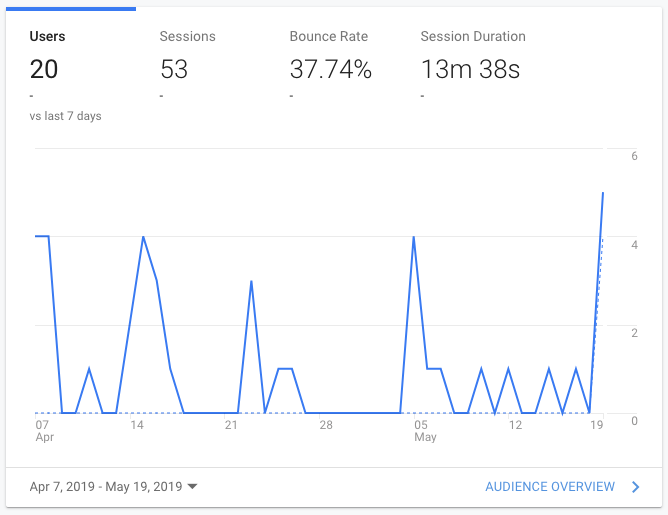
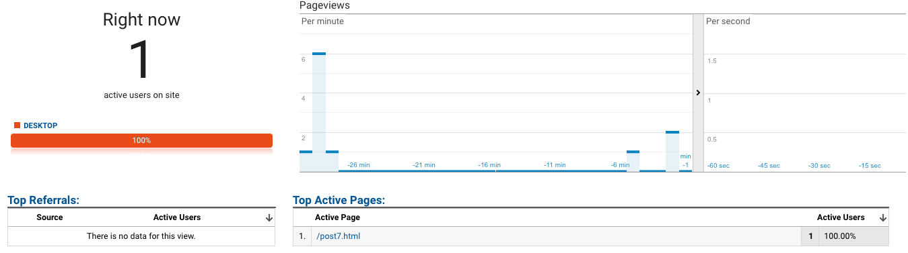
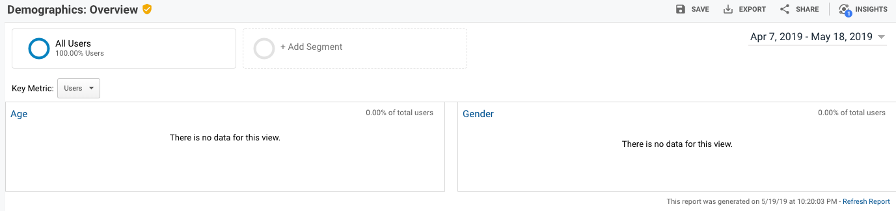
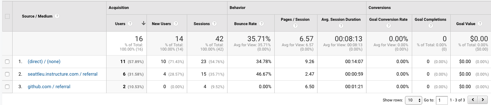
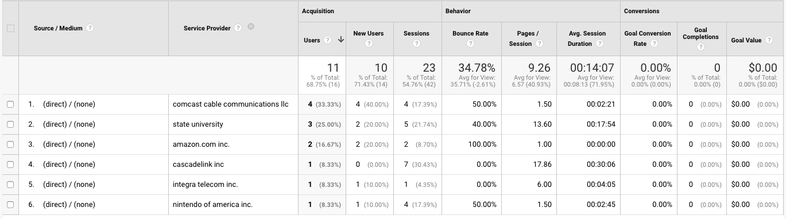
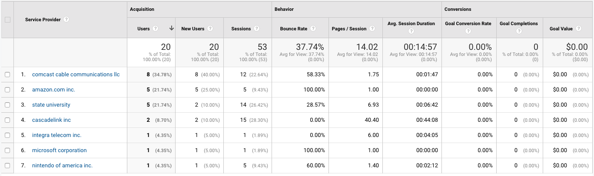

Introduction
When this blog was started back at the beginning of the course, one of the few things that I did was to add Google Analytics links (as instructed in class). Since then, I have completely forgotten about it until this week prompted a review of the analytics. When I started writing this post, I titled it Write Like Nobody is Reading: The Analytics of One. I wrote that before I actually looked at any of the Analytics data. However, as will be demonstrated, that is not quite the case here.
A Lifetime of Users
After logging into Google Analytics, I was surprised to see the graph of users show more than one, although it really only showed 3 or 4. However, this prompted me to adjust the date range in an effort to capture more data. By setting the range all the way back to the day I set up Google Analytics, I was able to see something unexpected.
 As this graph of users shows, somebody is actually looking at this site.As far as Google can tell, twenty different users have frequented this blog. Or, in the alternative, I have used upwards of fifteen different devices (with disconnected web browsers) to look at my site. [Note: That's probably a joke, right?] Although I was quick to assume that I was responsible for most of this traffic, it also occurred to me that most of the time that I spend looking at my website is when it's running on a localhost (for testing). A quick check revealed that this DOES in fact count; as I am writing this and testing it on my localhost, Google Analytics reports a live user viewing post7.html. This is most important because post7.html only exists on the localserver (at the time of this writing).
 This is actually probably bad news insomuch that "somebody is reading this" is concerned.The most immediate takeaway from this data is that every time I use VS Code and the LiveServer to test my HTML, my Google Analytics is likely getting messed with. Right as I typed this sentence, I saw a "Pageview per second" emanate on the real-time tracker. A pageview generated by my LiveServer running in the background. Just SAVING the page generates a view. *sigh*
Depressing Demographics
One feature that Google Analytics allows is Demographic tracking. In theory, this would tell me something about the demographics of the people visiting my site. Or, perhaps more correctly, what Google has determined about the demographics of the people visiting my site.
 Before you ask, yes. Yes, Demographics tracking was turned on when Analytics was set up.It may just be that Google doesn't have the tools necessary to determine demographic data. Or, in the alternative, it may be related to the fact that so few users visit the site so Google is unable to effectively predict the demographic data. Either way, Demographics ended up being a "bust."
Acquisitions and Referrals
The Acquisitions section of Google Analytics told more of the story that (likely) confirmed some of my theories. All of the Google-tracked users come from three source: (1) direct; (2) seattleu.instructure.com (Canvas); and (3) github.com. These three sources say quite a bit about the sorts of people that are arriving at this site.
 This picture says quite a few words, and most of them are "it's almost all me."The most suspicious referral stream here is actually the direct. Direct acquisitions typically mean that people are entering the website URL directly (whether it is a copy from another source or typed in manually). Although there's always room for random visitors, I'm reasonably certain that the direct visitors are almost entirely me, whether it is me opening the window from VS Code, typing the URL in manually on my web browser, or following a link from my bookmarks bar. And, given that I use multiple different devices to access my site, including three different desktop/laptop computers, from a variety of different locations, it seems reasonable to conclude that a lot of these direct acquisitions are, in fact, me.
Of course, I could be wrong.
 And, apparently, now I discover that it isn't me at all.This was surprising because suddenly I realize that only 2-3 of these directly referred users are me. As I do some of my work while on campus through the University's internet, one of them is likely me. As it ends up, the CascadeLink user is also me. However, several of these other users are definitively NOT ME.
 All of the Service Provider information available. I guess I'm not as big a deal to my site as I thought.In an attempt to "fine-tune" the data further, it appears that it is likely that I account for at least one or two of the referred users, although this is difficult to determine for certain. I am relying on the fact that my Internet Service Provider (CascadeLink, LLC) is relatively uncommon. Thus, it tends to be a good indicator that a specific user is me. However, CascadeLink only appears on one of the direct referral users and one github-referred user (likely me when I'm testing that the Github link works).
More User Data
Google Analytics provides a variety of data about the users that visit this site. Chrome is the most popular browser used to visit the site, with 12 of 20 users using it. Safari comes in next, with 6 out of 20 users. Android Webview and Microsoft Edge make up the other two users' browsers. Only one user is recorded as a mobile user which is consistent with the single Android Webview user. One could imagine that most of the people visiting the site are doing it as part of the class. That means that most people are probably doing it with the intent of commenting on it (through Canvas). Or, in the alternative, somebody could be looking at my site seeking inspiration for their own assignment. If anything, the single mobile user presents something of an oddity; who is out there viewing the site on their mobile device?
Conclusions
This "introduction" to Google Analytics was quite surprising. As I suggested in the introduction to this post, I expected it to be a whole lot of me. And, more importantly, I worried that me testing the site on a local web server would negatively impact the data. As it ends up, the local server doesn't seem to matter much. What might matter is me accessing the website from a number of different locations using different devices. But, the biggest takeaway is that some people are actually looking at the site that are not me!
That's really the biggest surprise.